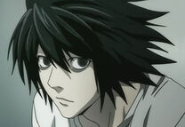

L cuyo verdadero nombre es L Lawliet es el misterioso detective que toma la misión de atrapar a Kira. Aunque en un principio se desconoce su rostro y nombre, a lo largo de la serie acaba presentándose ante otros personajes, desvelando así su extraña personalidad y convirtiéndose en uno de los personajes principales de la serie.
Apariencia
L es un joven de 25 años, pese a que aparenta ser un adolescente de 17 o 18. Tiene el cabello negro y muy revuelto. Sus ojos son negros y sus pupilas se encuentran dilatadas todo el momento. Su piel es tan blanca que toma tonos cadavéricos. Esto puede ser gracias a que se expone muy pocas veces a la luz del sol. Su piel contrasta con sus profundas y marcadas ojeras ya que duerme muy poco, manteniéndose despierto con la ayuda de toda clase de dulces y la cafeína, que le otorga un aspecto cansado. Su altura aproximadamente es de 1,79 cm al igual que Light Yagami, sin embargo, parece más bajo que él ya que siempre anda encorvado.
Tiene un aspecto frágil debido a su asombrosa delgadez. Es poseedor de conductas extrañas, como sentarse en cunclillas en cualquier sitio o tomar objetos con las puntas de los dedos. Es un inadaptado social ya que le cuesta relacionarse con el resto de personas. No tiene tacto al hablar, por lo que puede llegar a herir sentimientos debido a su extrema sinceridad.
Personalidad
Como características personales, L es un personaje muy introvertido, que evita relacionarse con la gente y que no suele confiar en nadie, hecho que él mismo reconoce. Tiene costumbres poco habituales, como sentarse de cuclillas alegando que si no lo hace su capacidad de concentración disminuye un 40%. Está tan concentrado en resolver sus casos que no tiene tiempo para preocuparse por su propio aspecto físico. Es muy persistente en sus deducciones y le cuesta aceptar que pueden ser erróneas. Por lo que entra en una profunda depresión cuando se da cuenta de que estaba equivocado.
